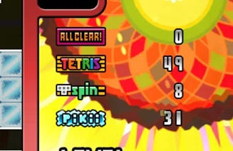
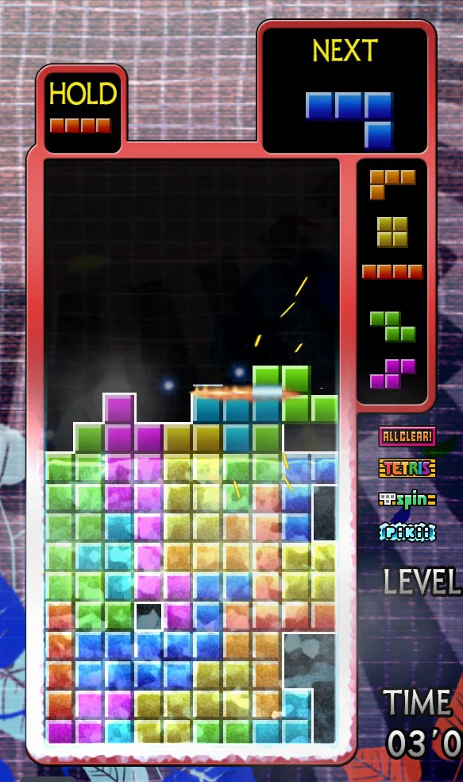
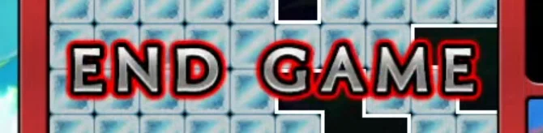

Tetris đóng băng - Hướng dẫn Master Mode
Đây là một cái guide (chắc là) cơ bản để đạt danh hiệu Grand-Master - vượt qua Master Mode
Thuật ngữ:
Section: Một giai đoạn 100 level. Level 0-99 là một section, level 900-999 là một section
Cơ bản về Master Mode
Mục tiêu
Đạt level 2600 (2 lần)
Hệ thống Badge
Đạt được trong quá trình chơi. Có liên quan đến một vài gimmick.
Khi đạt đủ số lượng badge, mỗi lần xóa hàng sẽ tăng thêm level (badge bonus)
| Cách nhận | Badge Bonus | Thời gian đóng băng Master Pikii (1/60 s) | |
| All Clear | Thực hiện Bravo (Perfect Clear) | +1 level mỗi 6 badge | +2.5 |
| Tetris | Xóa 4 hàng cùng lúc | +1 level mỗi 10 badge | +1 |
| T-Spin | Xóa T-Spin Double hoặc T-Spin Triple | +1 level mỗi 16 badge | +1 |
| Pikii | Lấp đầy hàng trong khu vực Pikii | +1 level mỗi 28 badge | +3 |
5-31-8-36 tương ứng với 5 All Clear, 31 Tetris, 8 T-Spin và 36 Pikii
Các gimmick
Pikii
Thời điểm: Level 300, 500, 700, 800, 900
10 hàng dưới của bảng sẽ bị đóng băng, kể cả khi có lấp đầy, nó vẫn không biến mất. Nó chỉ biến mất khi bạn vượt qua section hiện tại.
Mỗi hàng lấp đầy ở khu vực Pikii sẽ tăng 1 badge Pikii. Có 5 section Pikii, mỗi section 10 hàng, nên tối đa có được 50 badge Pikii.
Chiến thuật
Hạn chế mắc sai lầm. Nếu bạn lấp hàng ở phần trên khu vực Pikii, bạn sẽ không thể đi xuóng
cho đến khi vượt qua section.
Đặc biệt là Pikii-2, khi mà việc sửa chữa sai lầm là rất khó.
Cyclone
Thời điểm: Level 1000+
Khối sẽ có tỉ lệ bị xoay sẵn.
Hộp Next sẽ cho biết hướng của MỘT khối tiếp theo, các khối sau đó vẫn hiện ở trạng thái thường.
Bạn càng chơi Tetris lâu, bạn sẽ nhận ra sự lĩn hàm của gimmick này. Đây là một trong những lí do khiến Master Pikii rất khó
Người chơi Standard Rule phải để ý. Khối I, S, Z có 4 hướng thay vì 2 hướng.
Chiến thuật
Chơi chậm. Nếu chơi nhanh, bạn có thể không có thời gian để nhìn hướng khối tiếp theo.
Học các hướng rất quan trọng nếu muốn di chuyển khối đến vị trí mong muốn.
Master Pikii
Thời điểm: Level 1300+
Khối sau khi khóa một khoảng thời gian sẽ đóng băng. Nếu lấp đầy hàng có khối bị đóng băng, chỉ phần không đóng băng biến mất.
Thời gian đóng băng phụ thuộc vào số lượng badge. Thời gian bắt đầu từ 2f

Chiến thuật
Nếu chiến thuật bạn chọn cần ít thời gian đóng băng, bạn có thể cố ý lấy ít badge để rút ngắn thời gian đóng băng.
END GAME
Thời điểm: Level 2600
Sau khi đạt level 2600 với đủ điều kiện, Bạn sẽ tiến vào giai đoạn END GAME.
Bạn sẽ tua ngược về 65 giây trước. Trong 65 giây tiếp theo, bạn phải đạt level 2600 một lần nữa.
Một vài điểm lưu ý
Toàn bộ bảng sẽ được "rã đông" một lần. Nên nếu chiến thuật bạn chọn cần setup, bạn phải phá hết mọi thứ rồi xây lại từ đầu.
Badge không bị tua ngược.
"Không phải cứ 4 wide là xong à???"
Nếu bạn chơi Tetris đối kháng nhiều, bạn sẽ nghĩ ngay đến 4 wide.
Tuy nhiên, khi bạn xóa hàng mà có khối đóng băng, phần trên sẽ không hạ xuống.
Và mọi thứ sẽ tệ hơn khi phần dư bị đóng băng. Nên bạn phải phá phần dư trước khi nó đóng băng.
Các pattern Master Pikii
Khá chắc là bạn rất mong chờ đến phần này (hoặc là bạn chưa đọc phần trên lol).
Phần độ khó được kí hiều theo thang màu:
- Dễ / Có lợi cho người chơi
- Khó / Không có lợi
Kirby Machine
Chỉ áp dụng cho Standard Rule
Độ khó:
- Xây setup: Khó vl
- Tỉ lệ mắc sai lầm: Gần như không có
- Tốc độ đặt khối: Vừa đủ
- Tốc độ xóa hàng: Cực nhanh, gần như khối nào cũng xóa được
- Thời gian đóng băng: ~200f. 15-30-0-45 khi luyện tập, 0-50-0-50 thực tế
Setup này được sáng tạo bởi Kirby703, và nó rất nổi tiếng vì là cách đầu tiên đạt được Grand-Master.
Từ dưới lên trên, setup này cần:
- Lỗ để xóa S/Z
- Phần rộng 2 khối (2W) để xóa khối O
- Phần 3W để xóa khối L, T, J
- Phần 4W để xóa khối I
Phần lỗ để xóa S/Z sẽ áp dụng All-Spin
Phần 3W dùng để xóa L, T, J. Không thể xóa lẻ một khối nên phải kết hợp cả 3 lại
O và I thì nhìn phát biết luôn.
Điểm lợi và hại:
Một khi đã xây xong setup, bạn có thể liên tục xóa hàng.
Vì mỗi khối đều có thể xóa ít nhất một hàng, nên tốc độ tăng level sẽ rất nhanh.
Phải học hướng của khối S và Z. Cả hai khối đều có chung cách xoay: Đưa tâm sang phải, xoay ngược chiều kim đồng hồ.
Một khi mắc sai lầm thì gần như không thể khôi phục. Nên bạn phải chơi hoàn hảo ở tốc độ cao.
Mẹo
Phần lỗ để xóa S/Z khá phức tạp. Nên học các cách xây nó sẽ giúp ích rất nhiều.
Để ý thứ tự L, T, J. Nếu đã đặt J hoặc T, trừ I thì không có khối nào có thể đi vào vị trí mong muốn. Sử dụng hộp Hold để thay đổi thứ tự nếu cần.
Sau khi đặt khối L, nếu T, J đến muộn, phần dư của khối L sẽ đóng băng. Nên là có thể cân nhắc việc dùng cặp S+L và L+L
Biến thể: Kirby Machine + TSD
Setup này nhắm vào việc tăng badge bonus bằng T-Spin Double. Nếu J đến trước T, bạn có thể thực hiện TSD với phần dư của khối J
Bonus: Kirby Machine đảo ngược
Tweet Reversed K.M. 1 https://t.co/mGcOxNsr86 pic.twitter.com/1lW4HiYTmg
— đăng bởi @RunningOutRate vào 6 tháng Bảy, 2025
Dịch:
Đây vẫn chỉ là ý tưởng.
Vì chỉ có khối sau 1300 bị đóng băng, nên từ 1000-1300, hãy xây phần màu xám ở hình 1. 10 dòng đó
chính là phần NOT của K.M.
Sau 1300, hãy lấp phần màu xanh ở hình 2. Nếu lấp thành công và nó bị đóng băng, khi xóa hàng, chỉ
phần NOT sẽ biến mất.
Tweet Reversed K.M. 2 pic.twitter.com/RiS1yOIlvz
— Đăng bởi @RunningOutRate vào 6 tháng Bảy, 2025
Dịch:
Nếu bạn làm đúng (?), phần NOT sẽ bị xóa và các khối đã được lấp vào 2 bên như hình 1. Nếu làm khéo,
nó sẽ rất đẹp giống hình 2.
Giờ thì không cần di chuyển sang 2 bên nữa, cứ combo tẹt ga ở giữa bảng thôi. Con người khó mà làm
được điều đó.
CLGT???
2-wide (Elevator)
Được sáng tạo bởi Yoshi.
Độ khó:
- Xây setup: Bình thường
- Tỉ lệ mắc sai lầm: Có nhưng phải xử lí nhanh
- Tốc độ đặt khối: Vừa đủ
- Tốc độ xóa hàng: Vừa đủ
- Thời gian đóng băng: ~200f. 15-30-0-45 khi practice. 0-50-0-50 thực tế.
Từ dưới lên trên, setup này cần:
- Phần 2W (khoảng 7-8 hàng)
- Phần 3W (khoảng 5-6 hàng)
- Phần 4W (ít nhất 1 hàng) để xóa khối I
Phần 2W dùng để xóa đa số khối. Thông thường sẽ dư ra một ô, tùy thuộc vào khối bạn dùng, khối dư đó có thể đi lên, xuống, sang trái, phải.
Phần 3W rất quan trọng vì nó được dùng để loại bỏ ô dư khi nó lên trên cao.
Bạn có thể dùng các cặp khối kết hợp với phần 3W để tự xóa.
Tuy có thể dùng phần 4W để xóa khối I, nhưng vẫn có thể bỏ khối I vào phần 2W để kiếm Tetris.
Điểm lợi và hại:
Giống Kirby Machine, một khi đã setup xong, bạn có thể liên tục xóa khối.
Một khi đã mắc sai lầm ở phần 3W và các khối đó đóng băng, sẽ không thể tiếp cận phần 2W nữa.
Mẹo
Học các pattern xóa phần dư là rất quan trọng. Có nó, bạn sẽ có tỉ lệ thành công cao hơn sao với việc xóa bừa và cầu nguyện.
Nếu stack đủ khôn khéo, bạn có thể điều chỉnh độ cao các hàng và kiếm Tetris.
Chừa phần bên trái để bỏ các khối không theo mong muốn.
Nếu xóa dùng các cặp khối, phải cẩn thận để phần dư không bị đóng băng. Tùy thuộc vào badge và tốc độ, nhưng nếu sau 4 khối thì khả năng cao là nó sẽ đóng băng. Vậy nên...
- Sau 1 lần, trở về phần dư
- Sau 2 lần, tăng tốc, trở về phần dư càng nhanh càng tốt.
- Đừng nghĩ đến chuyện làm 3 lần...
1-2-3-wide (Funnelling)
Được sáng tạo bởi suitougreentea.
Độ khó:
- Xây setup: Bình thường
- Tỉ lệ mắc sai lầm: Có nhưng phải xử lí nhanh
- Tốc độ đặt khối: Rùa tí vẫn ổn
- Tốc độ xóa hàng: Vừa đủ
- Thời gian đóng băng: ~140f. 6-38-0-28 khi practice. 0-50-0-28 thực tế.
Từ dưới lên trên, setup này cần:
- Phần 1W (khoảng 10 hàng)
- 2 hàng 2W
- 2 hàng 3W
Phần 1W sẽ dùng để xóa Tetris, hạ thấp stack.
Các phần còn lại sẽ dùng để xóa các (cặp) khối.
- O
- L
- S -> L
- S -> J
- Z -> J
- T -> T
- JT
Tetris sẽ lấy đi phần 1W, nên bạn có thể sẽ phải xây lại setup (sẽ gọi là "bổ sung")
Điểm lợi và hại:
Kể cả có mắc sai lầm ở dưới, miễn phần 1W có ít nhất 4 hàng, bạn vẫn có thể xóa bỏ các sai lầm đó.
Vì có thể nhận badge Tetris, nên bạn sẽ có tốc độ tăng level nhanh hơn ở phần END GAME.
Nếu có nhiều S/Z, bạn sẽ phải lựa chọn giữa bỏ sang trái hoặc phá setup và bổ sung.
Mẹo
Bổ sung là phần khó nhất của chiến thuật này. Nếu bạn có thể đảm bảo những điều sau đây, tỉ lệ thành công sẽ tăng lên rất nhiều.
- Nếu bạn có thể đảm bảo 4 hàng phần 1W, thì các sai lầm ở dưới không thành vấn đề.
- Phải biết cách sửa khi phần 2W không cao 2 hàng.
Phần 2W BẮT BUỘC phải cao 2 hàng. Nên không chỉ học cách xây 2 hàng, mà còn những cách sửa khi không phải 2 hàng
So với 2W, sẽ có nhiều trường hợp phải bỏ khối sang trái hơn. Sẽ rất tốt nếu bạn có thể xử lí nó mà không làm stack quá xấu.
Có rất nhiều cặp khối đi cùng với J, nên hãy đưa ra lựa chọn hợp lí dựa vào NEXT.
Bổ sung sau level 2000 rất nguy hiểm, nên bổ sung vào 1800-1900 rồi tập trung xóa từ 2000 trở đi. Nếu phần 1W cạn, có thể xây phần 4W để xóa khối I nằm ngang.
Korean Stacking (Freestyle)
Độ khó:
- Xây setup: Đây còn chả phải setup cơ
- Tỉ lệ mắc sai lầm: Có thì cứ chơi tiếp thôi
- Tốc độ đặt khối: Manlock đi
- Tốc độ xóa hàng: Siêu rùa
- Thời gian đóng băng: ~240f. 15-38-14-50 khi practice. Thực tế...???
Từ dưới lên trên, setup... à quên làm gì có setup. Cứ xóa khối trước khi nó đóng băng. Hết
Điểm lợi và hại:
Chẳng cần chuẩn bị gì cả! Cứ thế xóa hàng thôi.
Một khi khối đã đóng băng, nó sẽ trở nên vô dụng. Nên đây là thử thách đạt level 2600 với ít khối băng nhất.
Thời gian đóng băng là rào cản lớn nhất của chiến thuật này. 15-38-14-50 là tối đa trong luyện tập, nhưng cũng chỉ vừa đủ. Thực tế rất khó để đạt 240f.
Tốc độ là yếu tố cần thiết trong chiến thuật này. Nhưng manlock với Cyclone rất khó, yêu cầu luyện tập và tập trung cao độ.
Bạn gần như chỉ xóa Single và Double, tốc độ tiến triển level sẽ rất chậm. Không phù hợp nếu đang thực hiện time attack.
Mẹo:
Xây thật phẳng. Nếu xây nhấp nhô, một phần của khối sẽ đóng băng và bạn không thể xóa hàng được.
Dùng các khối phẳng (đặc biệt là I) nằm. Nếu bạn đặt dọc, số hàng cần xóa sẽ tăng lên và mất thời gian. Chỉ đặt dọc nếu đủ tự tin là mình xóa được hoặc là muốn bỏ một phần bảng và đi lên.
Cảm nhận thời gian đóng băng bằng cách luyện tập. Tập trung vào khối đã khóa và xem nó mất bao lâu để đóng băng, để rồi lựa chọn xóa hàng hoặc bỏ và đi lên.
Nếu xóa hàng có khối băng, stack sẽ rất xấu, nên đôi lúc sẽ tốt hơn để bỏ và đi lên.
Nếu hàng nào đó có khối băng, hãy lấp 9 khối vào hàng đó và chờ nó đóng băng. Việc này giúp việc xóa hàng ở trên dễ dàng hơn.
Flat 9-0
Độ khó:
- Xây setup: Bình thường
- Tỉ lệ mắc sai lầm: Có nhưng phải xử lí nhanh
- Tốc độ đặt khối: Nhanh phết
- Tốc độ xóa hàng: Hơn mỗi K.S.
- Thời gian đóng băng: ~200f. 15-30-0-45 khi luyện tập, 0-50-0-50 thực tế
Vẫn là Korean Stacking, nhưng bạn có thể kiếm thêm Tetris.
Điểm lợi và hại:
Chơi rất giống Tetris phổ thông.
Có thể kiếm thêm badge Tetris cho END GAME. Khi đến đó, bạn có thể tiếp tục dùng chiến thuật này hoặc đổi sang chiến thuật khác với tốc độ tăng level nhanh hơn.
Bạn vẫn có thể chơi tiếp miễn là bạn kiếm được Tetris. Không cần quá nhiều hàng để setup, và bạn có thể khôi phục từ dòng thứ 15.
Nếu bạn lỡ chặn lỗ Tetris và nó đóng băng, thì bạn sẽ mất luôn phần dưới của bảng. Những trường hợp thế này xảy ra khi bạn nghĩ là mình có thể xóa hàng trước khi nó đóng băng.
Tốc độ là cần thiết ở chiến thuật này giống như K.S., nhưng bạn phải suy nghĩ nhiều hơn.
Dù có thể xóa Tetris, nhưng nếu so với các chiến thuật combo, tốc độ này vẫn khá chậm, không phù hợp cho time attack.
Mẹo:
Giống như K.S., cảm nhận thời gian đóng băng.
Đôi lúc, bạn có thể lựa chọn để lỗ trong một lúc. Miễn phần trên của nó không bị đóng băng, bạn vẫn có thể lấp lại.
Nếu đã chọn xây Tetris, hãy xây một cách chủ động. Nếu như xây từng chút một và mắc sai lầm, sẽ không thể xóa Tetris để khôi phục được.
Phần kết
Mong là guide này sẽ giúp bạn thay đổi suy nghĩ từ "Khó thế sao chơi???" thành "Cũng thú vị, để thử xem sao."
Và biết đâu được, bạn có thể đạt danh hiệu Grand-Master...